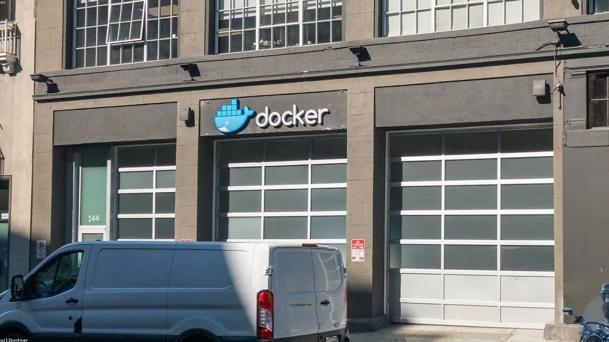

Phase 1: Identify the Highest-ROI AI Opportunity
We analyze your workflows to identify the single highest-ROI opportunity for AI.
Workflow analysis and ROI estimate
Technical feasibility validation

We deliver a single high-ROI AI system first — then expand AI across your operations.
Typical first system: 4-8 weeks to production.
We analyze your workflows to identify the single highest-ROI opportunity for AI.
Workflow analysis and ROI estimate
Technical feasibility validation
We build a production-ready AI system tailored to your operational workflows.
Built for production deployment from the start.
Custom AI architecture
Iterative system reviews
Production-ready integrations
We integrate the system into your existing tools and workflows, and train your team to use it.
Live deployment into production workflows
Team onboarding and documentation

Once the first system is delivering value, we identify the next operational workflows to automate or augment.
Strategic roadmap
Continuous optimization
ENGAGEMENTS TYPICALLY DELIVER AN OPERATIONAL SYSTEM IN 4–8 WEEKS.